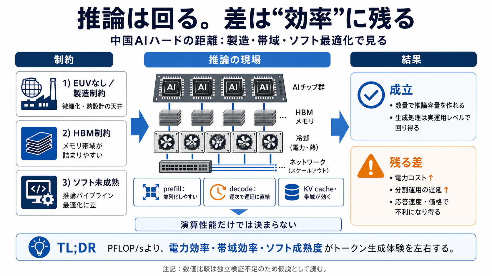

DeepSeek research suggests Huawei's Ascend 910C delivers 60% of Nvidia H100 inference performance | Tom's Hardware
its AI computing infrastructure. [...] > > I just want to point out that the H100 burns a lot of die area on stuff tha…

中国製AIチップで推論は成立し得る一方、EUV不在・HBM制約・ソフト未成熟が、電力効率と帯域効率の差として長く残りやすい。
推論性能（生成の速度）を、製造能力＋電力/帯域効率の観点で“推定”する。
Z.AIの確認は前提だが、詳細数値は独立検証がなく推定が混ざる。
記事の中心は「計算能力が足りない」というより、先端微細化と熱設計を支える製造制約が、効率の上限を作る点にある。
先端プロセス到達に不可欠。欠けると“下限”が早く来る。
推論はメモリ帯域に強く依存。調達制約が効く。
生成処理を前処理と後処理に分け、遅延と効率差が現れる。
同じ演算性能でも、電力あたり処理量・メモリ帯域・通信と冷却のオーバーヘッドで、実際のトークン生成体験は変わる。
INT8/FP8/FP4（量子化）対応が効くが、万能ではない。
HBM構成とKV cache（キャッシュ）余地が、スループットを左右。
Z.AIが「中国製ハードで推論全量実行」と述べた前提から、計算は実運用レベルで成立している可能性が高い。
推論を自前ハードで実行（学習ではなく生成処理）。
記事ではHiSilicon（華為）を最有力候補として仮置き。
チップ世代・枚数・電力などが不明で、定量比較は推定寄り。
EUV不足があると、一定世代以降で熱設計・性能設計の自由度が減り、高密度化と効率改善が鈍化しやすい。
微細化の下限が早く来る（より小さく・高速にする道が閉じる）。
同じ電力制約の中で、帯域/演算あたり性能を伸ばしにくい。
結果として、最先端製品との差が“効率差→運用コスト/速度差”に転嫁されやすい。
HBMの調達制約が、次世代カードのメモリ技術・構成の多様化を招き、帯域不足や効率低下につながり得る。
演算より先にメモリ待ちが表面化し、トークン生成が詰まりやすい。
PFLOP/s（演算）だけでは説明できない差が出る可能性。
効率や製造で劣るなら、同等の推論容量を「チップを大量に積む」ことで作れるため、推論供給としては成立し得る。
総計算量（推論容量）を増やして不足を相殺。
電力・冷却・接続（インターコネクト）の供給が必要。
分割運用で速度やトークン効率が下がりやすい。
モデルが大きくなるほど多数のサブシステムへ分割が必要になり、遅延やトークン効率悪化が起きやすい。
大規模入力で並列性が効く一方、通信も増える。
逐次性が強く、待ち時間が体験に直結しやすい。
記事の見立てでは、性能が成立しても、NVIDIA等に対して電力効率・帯域効率・ソフト最適化の成熟度で差が残りやすい。
EUV不足→微細化・熱効率で不利。HBM制約→帯域で不利。
最適化（推論パイプライン/通信/量子化対応）で引き出しが変わる。
著者自身が、独立検証がないことや数値の信頼性を明記しているため、KPIの確定比較より因果の方向性を読むべきだ。
メーカー名や構成は“最有力候補”扱い。
電力・冷却・枚数・バッチ/ベンチ条件が見えにくい。
製造制約→効率差→運用コスト/速度への波及を理解する。
達成は称賛できるが、EUV・HBM・電力/冷却・ソフト最適化の“物理/供給制約由来の壁”は当面解消されにくく、効率差が拡大し得る。
推論供給は「成立」し得る（数量での相殺が可能）。
分割運用のオーバーヘッドと電力コストで、速度・価格で不利になり得る。
TL;DR：推論は回るが、「効率差」はコストと応答速度に残りやすい／残り得る。
以下は本稿理解に必要な“概念の整理”であり、個別の数値出典を保証するものではない。
its AI computing infrastructure. [...] > > I just want to point out that the H100 burns a lot of die area on stuff tha…
#6 Assimilator > Nomad76Huawei has reportedly informed its clients that the Ascend 910C can match the performance of …
Tags: AI Chip Performance AI Chips 2025 AI Hardware Competition Ascend 910D Benchmark Huawei Ascend 910D Huawei vs Nvidi…
Home Executive Interviews Startups Advertise About + Trust & Safety + Editorial Policy August 9, 2026 Home E…
the span of a year, suggesting that mass-production is indeed close. [...] ## Huawei's Next-Gen Ascend AI Chip Now Comes…